REST stands for Representational State Transfer.
It is a set of architectural principles for building networked systems.
REST is not a protocol it's an architectural style.
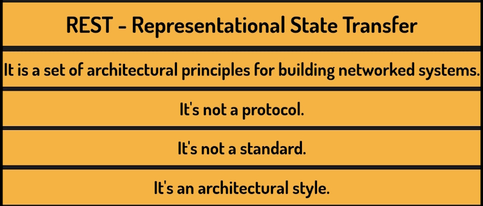
REST is a set of guidelines that describe how a well-designed system should behave.
Following these principles leads to APIs that are predictable, easy to use, and easy to maintain.
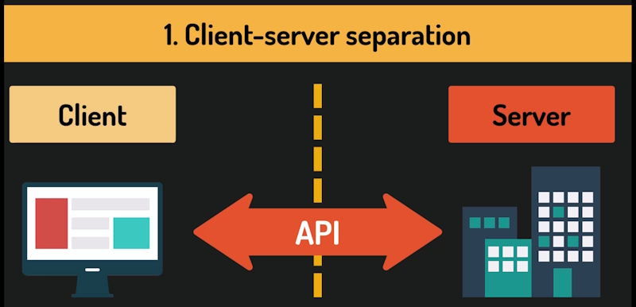
The client and the server are independent from each other.
The client, which could be a web browser, a mobile app, or another service, doesn't know how the server stores or manages its data.
The server doesn't know how the client displays or processes what it receives.
They communicate only through the API.
This separation means we can change the front-end without touching the back-end, and vice versa. It keeps things modular and maintainable.
It is one of the most important ideas in REST, and it has real consequences for how we design our APIs.
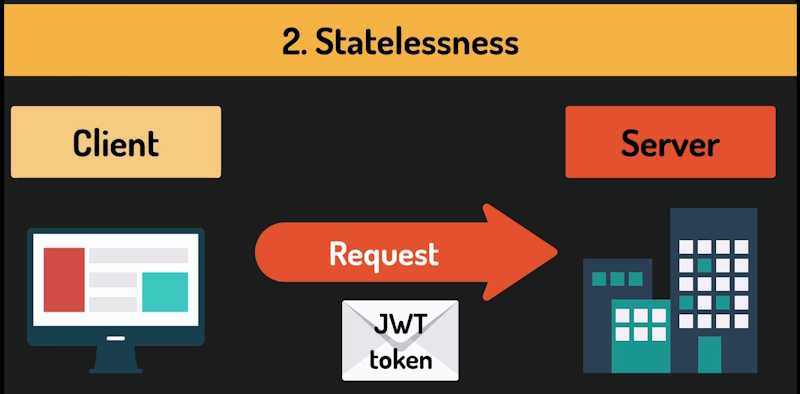
Statelessness means that every request from the client to the server must contain all the information needed to process that request.
The server does not store any session state between requests. It does not remember who you are from one request to the next.
For example, when implementing authentication in our APIs, we often use JWT tokens, which are compact strings that carry information about the user in a self-contained format.
Every time a client makes a request to a protected endpoint, it must send that token along with the request. The server doesn't remember that the client was logged in. It checks the token each time.
That's statelessness in practice.
This might sound like a limitation, but it's actually what makes REST APIs scalable because the server holds no session state, any server in a cluster can handle any request. There's no need to route a client to the same server every time.
This is the most characteristic feature of REST, and it's what makes REST APIs feel intuitive.
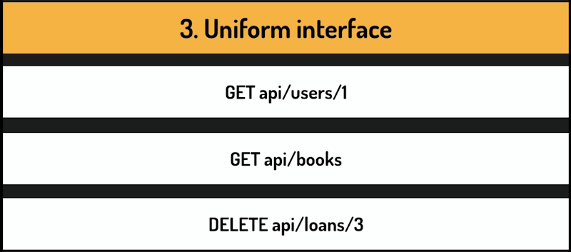
A uniform interface means that the API behaves in a consistent, predictable way.
If you understand the pattern, you can use the API without reading every page of documentation.
The things our API exposes, are identified by URLs and the action we want to perform is expressed through the HTTP method.
For example in our endpoint:
/api/categories is the Resource URL.
GET is the HTTP method and describes what we want to do with the resource.
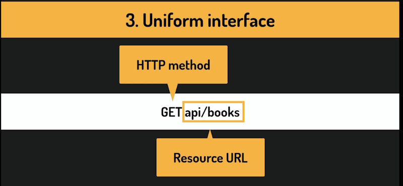
Some more examples:
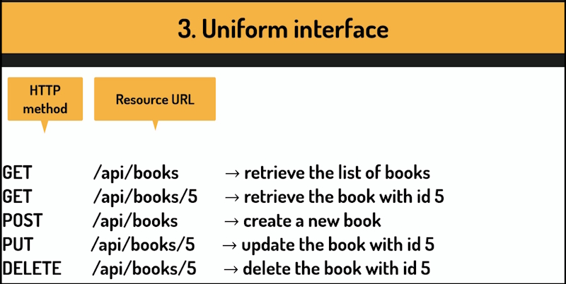
This is the core of a RESTful interface design.
The client doesn't need to know whether it's communicating directly with the server that handles its request, or whether there are other layers in between.
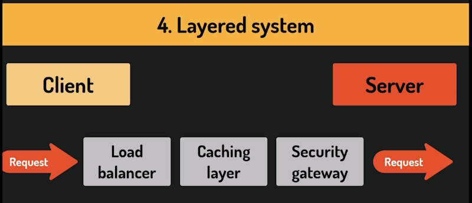
The client doesn't know that the Resource it has requested could be going directly or is being sent to a load balancer, a caching layer, or a security gateway.
This makes it easy to add infrastructure around our API without changing the API itself.
Luckily for us, this is something that many web frameworks handle for us. For example, in ASP.NET, this principle shows up in the middleware pipeline.
When a request comes in, it passes through a series of middleware components. One handles authentication, another error logging, another response compression. Each component does its job and passes the request along.
The client knows nothing about this chain, and adding or removing a middleware layer doesn't affect the others.
Caching means storing a copy of a response so that the same data can be returned again without repeating the work of generating it.
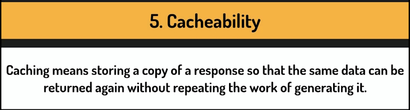
Instead of hitting the database and running the same query every time, the result is saved on the server, on the client, or somewhere in between and reused until it's no longer valid.
The REST principle says that responses should indicate whether this is allowed.
If a client asks for the same data repeatedly, and that data hasn't changed, caching it means the server doesn't have to process the same request over and over. This improves performance and reduces load.
HTTP has built-in mechanisms for this. Headers like Cache Control and ETag. And many API frameworks support them out of the box. In practice, GET requests for stable data are good candidates for caching.
A request that retrieves an author's biography doesn't need to hit the database every single time.
Requests that modify data, POST, PUT, DELETE are never cached.
Not every API that calls itself a REST API actually follows all the principles. And that's fine. In real-world development, you apply these guidelines with judgment.
The goal is to build an API that is consistent, predictable, and easy to work with.
Every HTTP response includes a three-digit status code. This code tells the client, whether that's a browser, a mobile app, or a tool like Scaler or Postman, what happened with its request.
These codes follow a well-defined standard, and understanding that standard will make us much better at designing APIs that communicate clearly with their clients.
The first digit alone already tells us a lot. HTTP status codes are organized into five categories, each starting with a different digit.
Let's go through them one by one.
Codes in the 100 range are Informational.
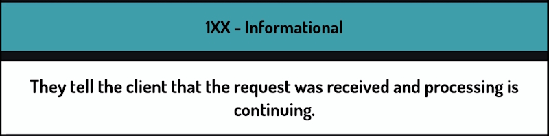
They tell the client that the request was received and processing is continuing. In practice, we almost never deal with these in REST API development. They are handled at a lower level, by the HTTP infrastructure.
You likely never return a 100 code yourself.
Codes in the 200 range mean the request was received, understood, and processed successfully. These are the codes we return when things go well.
200 OK is the most common success code.
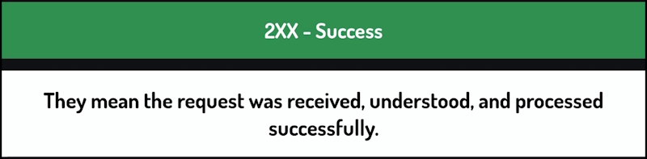
It's the general purpose, everything worked response. When a client requests a list of persons and we return it, that's a 200. When a client asks for a specific person and we find them, that's a 200.
201 CREATED is more specific.
We use it when a request results in a new resource being created.
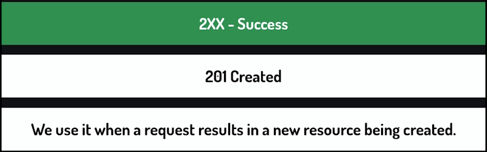
So when a client sends a POST request to add a new person and we successfully save them to the database, we should return 201, not 200. The distinction matters because it communicates intent. The client now knows a new resource exists.
204 NO CONTENT means the request was successful, but there is nothing to return in the response body.
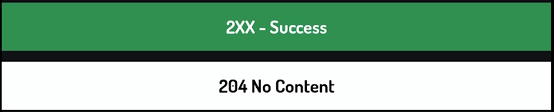
The typical example is a DELETE request. When a client deletes a person, the operation succeeds, but there is no data to send back so we return 204, success with an empty body.
Codes in the 300 range tell the client that it needs to take an additional step, usually go to a different URL, to complete the request.
The most common ones are 301 MOVED PERMANENTLY and 302 FOUND, sometimes called a TEMPORARY REDIRECT.
These are used more in traditional web applications than in REST APIs. When building an API, we generally don't redirect clients ee just return data.
So like the 100 range, you will not use 300 codes often in your API.
400 CLIENT ERRORS mean the request had a problem and the problem was on the client's side.
The server received the request, understood it, but couldn't process it because something was wrong with what the client sent.
400 BAD REQUEST is the general, something is wrong with your request, response.
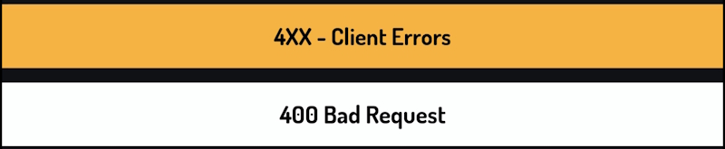
We use this when the client sends data that fails validation. For example, trying to create a person without a name or providing an email address in the wrong format.
401 UNAUTHORIZED is returned when a client tries to access a protected endpoint without valid credential.
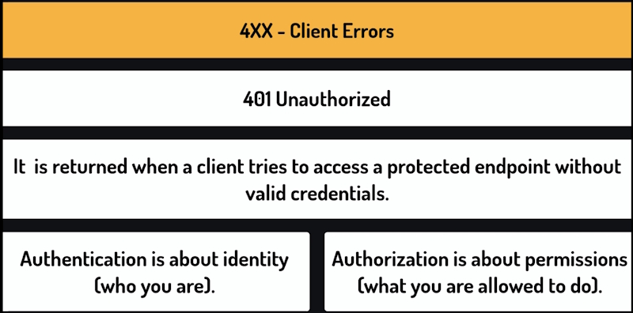
It means, I don't know who you are, please provide credentials. But wait a minute, authentication is about identity, who you are Authentication is about permissions.
So why is it called unauthorized if it's really about authentication? Well, that's the thing the name is misleading and it has led more than a few engineers into some very confusing debugging sessions.
403 FORBIDDEN is different from 401.
Here we know who the client is and they are authenticated, but they don't have permissions to perform this action.
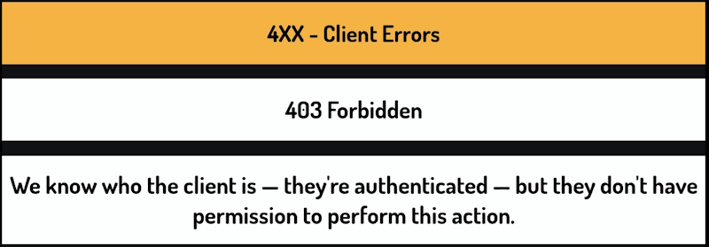
For example, a regular user trying to delete another person's account would get a 403 because that operation is restricted to administrators.
404 Not Found means that the requested resource doesn't exist.
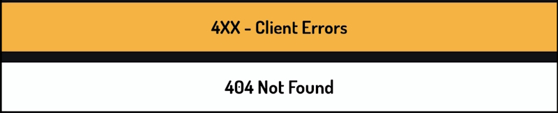
409 CONFLICT is used when the request can't be completed because it conflicts with the current state of the resource. For example, if a client tries to register with an email address that already exists in the system, that's a conflict.
The request is valid, but the current state of the data prevents it.
Codes in the 500 range mean something went wrong on the server's side.
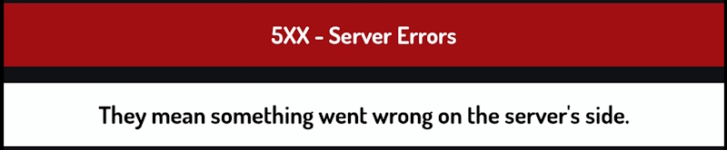
The request from the client may have been perfectly valid, but the server just failed to handle it.
500 INTERNAL SERVER ERROR is the general purpose code.
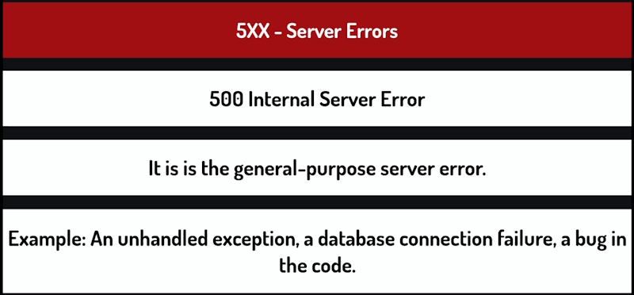
It means something unexpected happened. One unhandled exception, a database connection failure, a bug in the code. We never want to return this intentionally. It's the code that appears when we haven't handled something properly. If it happens, it means us, the developers, have some work to do.
503 SERVICE UNAVAILABLE means the server is temporarily unable to handle requests.
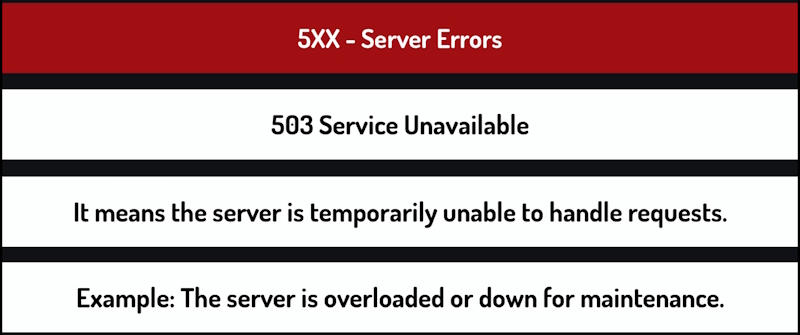
For example, because it's overloaded or downed for maintenance. Not something we return to directly in our application logic, but good to know what it means when you see Internal in it.
Every time we build an endpoint, we should think about what the correct response code should be for each possible outcome.
Success, validation error, missing resource, and so on. One last thing. Using the right status code is not just about following rules it's about making our API easy to work with.
When a client receives a response, the status code is the first thing it sees, before it even looks at the response body.
A well-designed API communicates clearly through its status codes. And that makes life easier for anyone who builds on top of it.